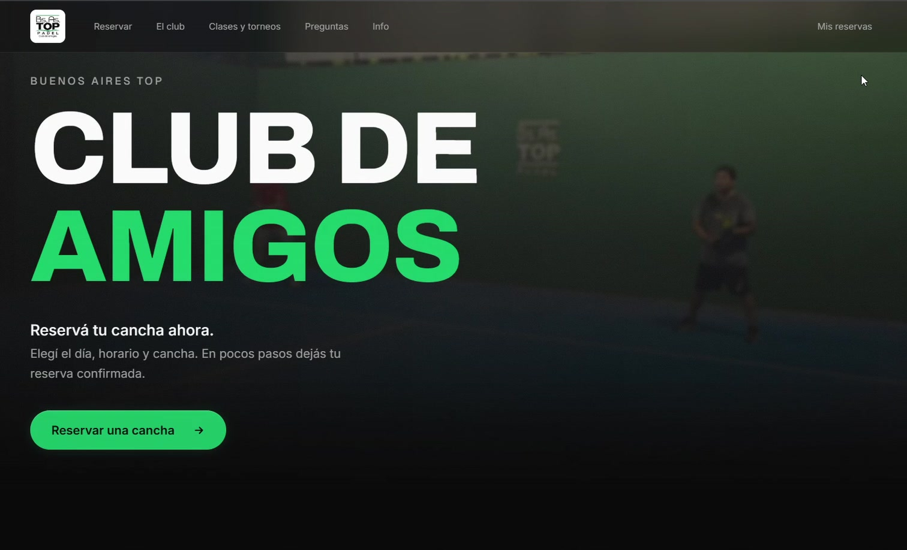

Proyecto · Página web
Reservas
online.
Web para Bs.As. Top Padel: los jugadores eligen
día, horario y cancha, y reservan solos.
Bs.As. Top Padel
Reservas en
pocos pasos.
Todo el club,
a la vista.
Bs.As. Top Padel · Página web
Hecha por
Aicia.
¿Querés una web así para tu negocio? Escribinos.
aicia